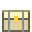
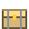

Cooking recipes (at a furnace)
| Makes | Heals | From | |
|---|---|---|---|
| Baked potato | 38 | 1 Potato | |
| Cooked bird | 28 | 1 Bird meat | |
| Roast rabbit | 36 | 1 Rabbit meat | |
 | Venison steak | 60 | 1 Venison |
 | Cooked pork | 55 | 1 Pork chop |
| Bear roast | 85 | 1 Bear steak | |
| Cooked wolf | 42 | 1 Wolf meat | |
| Hearty stew | 45 | 1 Venison, 2 Apple | |
| Grilled fish | 30 | 1 Raw fish | |
| Fish stew | 55 | 1 Raw fish, 1 Glowcap | |
 | Mushroom soup | 35 | 2 Glowcap |
| Berry pie | 60 | 3 Berries, 1 Bread | |
| Omelette | 40 | 2 Egg | |
| Honey cake | 65 | 1 Honey, 1 Bread, 1 Egg | |
| Shark fin soup | 80 | 1 Shark fin, 1 Glowcap | |
| Hunter's feast | 120 | 1 Venison, 1 Pork chop, 1 Apple | |
 | Bread x2 | 25 | 3 Wheat |
| Carrot soup | 40 | 2 Carrot, 1 Glowcap | |
| Roast carrots | 30 | 2 Carrot | |
 | Pumpkin pie | 70 | 1 Pumpkin, 2 Wheat, 1 Egg |
 | Harvest stew | 130 | 1 Carrot, 1 Pumpkin, 1 Wheat, 1 Venison |
 | Trout fillet | 45 | 1 Trout |
| Grilled bass | 50 | 1 Bass | |
| Fish and chips | 75 | 1 Cod, 1 Bread | |
| Seared tuna | 70 | 1 Tuna | |
| Pufferfish stew | 65 | 1 Pufferfish, 1 Glowcap | |
| Swordfish steak | 95 | 1 Swordfish | |
 | Angler stew | 80 | 1 Anglerfish, 1 Glowcap |
| Sushi platter | 110 | 1 Salmon, 1 Tuna, 1 Seaweed | |
| Steak | 45 | 1 Raw beef | |
| Roast mutton | 38 | 1 Raw mutton | |
| Beef stew | 95 | 1 Raw beef, 1 Carrot, 1 Potato | |
| Mutton pie | 85 | 1 Raw mutton, 2 Wheat | |
 | Cooked salmon | 50 | 1 Salmon |
 | Herbal tonic | 45 | 2 Herb, 1 Berries |
 | Healing potion x2 | 70 | 3 Herb, 1 Glass |
| Cooked boar meat | 22 | 1 Raw boar meat | |
 | Cooked beaver meat | 18 | 1 Raw beaver meat |
| Cooked hawk meat | 16 | 1 Raw hawk meat | |
 | Cooked eagle meat | 20 | 1 Raw eagle meat |
 | Cooked owl meat | 16 | 1 Raw owl meat |
 | Cooked penguin meat | 20 | 1 Raw penguin meat |
 | Sugar cake | 75 | 2 Sugar, 2 Wheat, 1 Egg, 1 Milk |
| Berry tart | 50 | 3 Berries, 1 Sugar, 1 Wheat | |
| Sugar cookies x4 | 14 | 1 Sugar, 1 Wheat, 1 Egg | |
| Candied apple | 30 | 1 Apple, 1 Sugar | |
| Golden fish feast | 110 | 1 Golden fish, 2 Herb | |
| Tomato soup | 30 | 2 Tomato, 1 Onion | |
| Corn bread | 28 | 2 Corn, 1 Wheat | |
| Grilled corn | 14 | 1 Corn | |
| Strawberry tart | 26 | 3 Strawberry, 1 Wheat | |
| Vegetable stew | 45 | 1 Carrot, 1 Potato, 1 Onion, 1 Cabbage | |
| Stuffed cabbage | 40 | 1 Cabbage, 1 Onion, 1 Pork chop | |
| Fruit salad | 32 | 1 Melon, 1 Strawberry, 1 Apple |